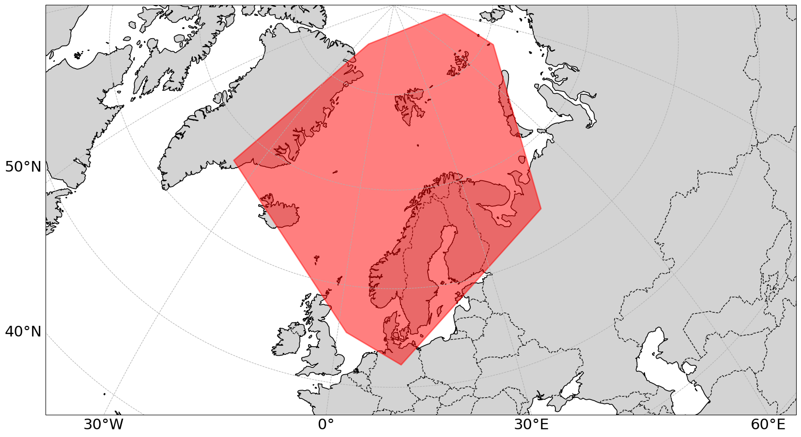
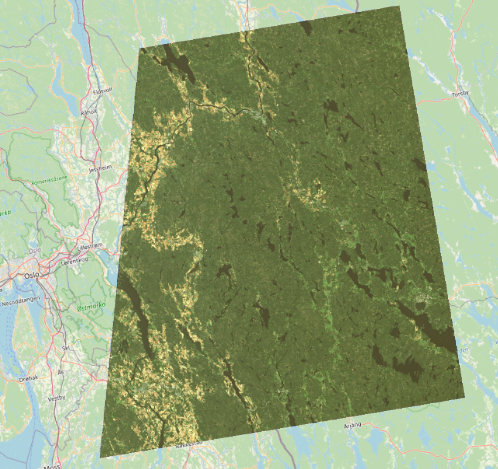
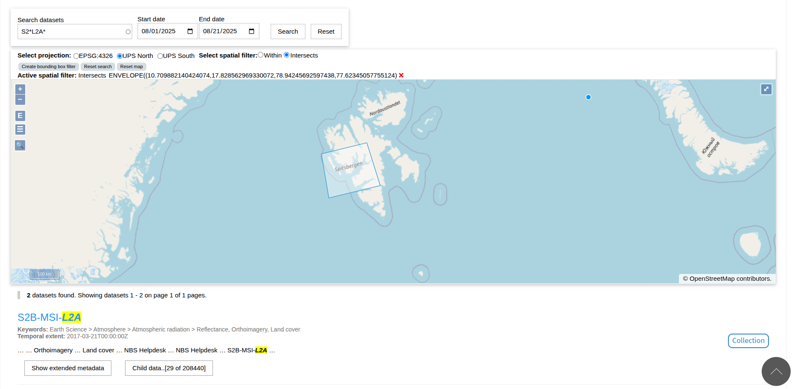
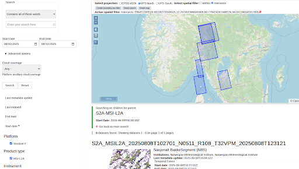

Introducing satellittdata.no#
satellittdata.no is a platform provided by the Norwegian National Ground Segment for Satellite Data. It hosts a catalogue of Level 0 to Level 2 (L0–L2) data dating back to the launch date of each Sentinel missions. Data are provided for a region covering Norway, the Norwegian Sea, Svalbard, the Greenland Sea, and much of the Barents Sea.

Why use satellittdata.no?#
satellittdata.no offers a range of advantages over other platforms that serve Sentinel data (e.g. CDSE):
High bandwidth#
Users benefit from increased bandwidth compared to other platforms. There is currently no limit on the number of products that can be downloaded in parallel.
Easy visualisation of data on a map#
Data can be easily overlain on a map using the Web Map Service (WMS). Users can easily navigate around the map and zoom in on their region of interest.
WMS can be integrated into your own services, as opposed to the CDSE viewer.

Comprehensive data availability#
All Sentinel missions are provided in their native Copernicus formats:
Sentinel-1: SAFE
Sentinel-2: SAFE
Sentinel-3: SEN3
Sentinel-5P: netCDF
satellittdata.no also maintains a rolling archive in CF-NetCDF format:
365 days of Sentinel-2 data
30 days of Sentinel-1 GRD data
TUTORIAL ABOUT WORKING WITH SENTINEL DATA IN NETCDF?
Sentinel-2 data are also available in datacubes, a visualisation-ready product that combines products over a long time period for a single tile.
Sentinel data will soon be available to download in GeoTIFF too.
TUTORIAL ABOUT THIS.
Flexible CF-NetCDF access#
CF-NetCDF is a widely used, machine-readable standard for geospatial data. On satellittdata.no these files are served via OPeNDAP, which enables:
Direct data streaming without downloading full products
Server-side subsetting and reduction
On-demand, flexible access
💡 CF-NetCDF files for older products can also be generated upon request.
Search interfaces#
satellittdata.no offers both graphical user interfaces - a simple and an advanced search interface - and machine interfaces.
Graphical user interfaces#
VIDEO ABOUT GRAPHICAL USER INTERFACES
Simple search#

The simple search allows the user to search based on the time the product was created, coordinates (using a bounding box on a map), or using a free text search. EXPLAIN FREE TEXT SEARCH A BIT.
Advanced search#

In addition to all the features of the simple search, the advanced search allows users to filter based on a number of important parameters
Mission
Product type (link to vocab?)
Cloud cover (Sentinel-2 products only)
…
Machine interfaces#
satellittdata.no is queryable using the following machine interfaces: